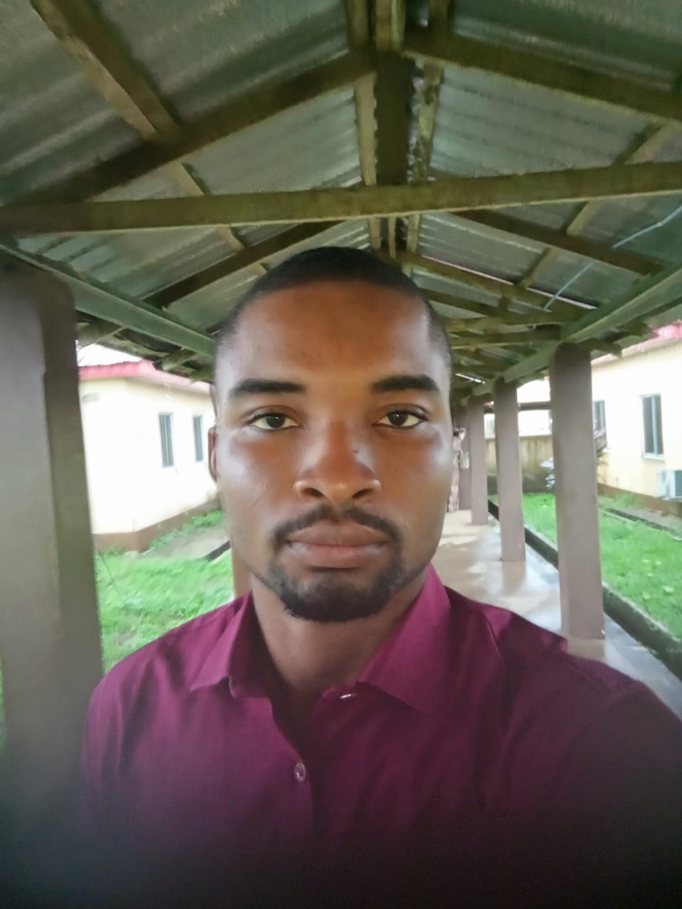

I am Christian Chibuzo Anyanwu, BMLS (Second Class Upper) from Imo State University. Currently serving as a Medical Laboratory Scientist at Federal Medical Centre, Epe - working with Sysmex & Selectra analyzers, molecular diagnostics and clinical chemistry.
📍 FMC Epe, Lagos | ✉️ anyanwubuzor2000@gmail.com | 📞 08130798052
A licensed Medical Laboratory Scientist passionate about translating fundamental laboratory science into clinical solutions.
Co-authored publications on ion channels and bioinformatics relevance in MLS.
My interest in circadian regulation, chronotherapy, and circadian medicine - optimizing diagnostics and treatment timing.
2024 - Present | Hematology & Chemical Pathology
Sysmex, Selectra, CBC, ISE, QC and calibration.
2022 - 2023 | Molecular Diagnostics
PCR-based viral testing, ISE technology.
Connecting molecular and diagnostic lab science to therapies that directly improve patient outcomes.
Email: anyanwubuzor2000@gmail.com
Phone: 08130798052

Christian Chibuzo Anyanwu